Yulia Podolnaya
UI/UX Designer and Art Director with 12 years of experience creating digital products
for complex, multi-platform ecosystems. Designed an application used by 20+ brands
and over 7 million subscribers worldwide.
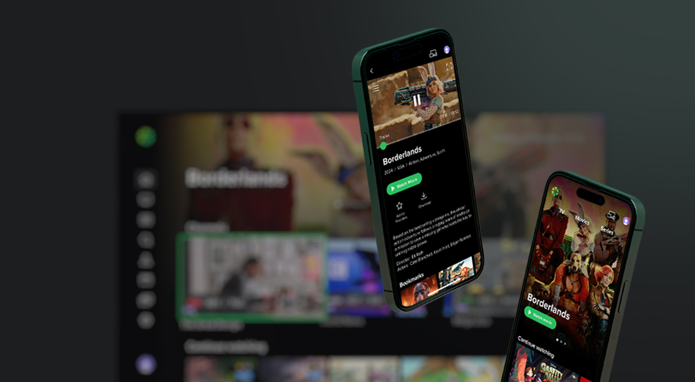
LIME
TV platform for connected TVs
and mobile devices
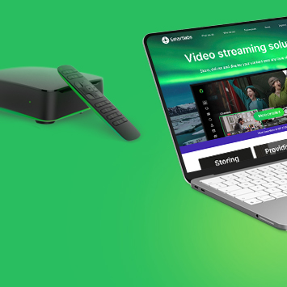
Smartlabs
Website & marketing materials
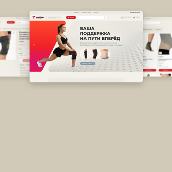
Variteks
Online store & catalogs
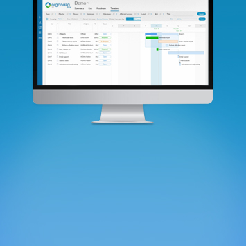
Organaza
Task management platform
LIME
Lime is a platform for watching movies, TV series, and live channels on TVs and mobile devices. It runs on all major operating systems, including iOS, Android, Tizen, and LG webOS. TV service providers worldwide license the platform to deliver content to viewers under their own brands. I redesigned the platform to better support the needs and goals
of different client projects.
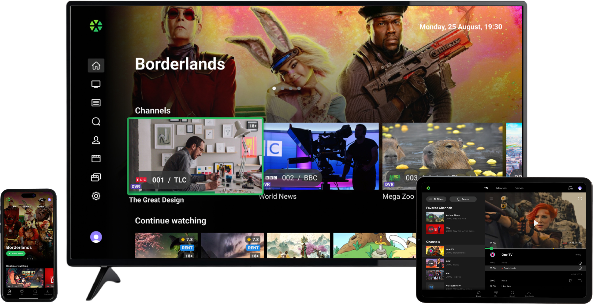
Project сhallenge
Player design
The goal was to redesign the player for movies, TV series, and live broadcasts across TV and mobile devices. On TVs, users navigate with a standard remote control. The key challenge was to make navigation intuitive, reduce the number of steps, and fit all essential playback controls into a simple interface.
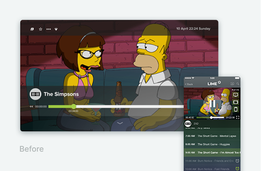
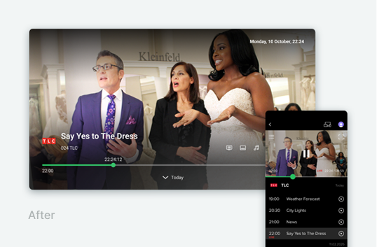
Problem
One local TV provider’s users were accustomed to switching channels with the up/down buttons while watching live TV. In the existing player, these buttons already had other functions: down opened the channel’s program guide, while up accessed playback settings such as audio, subtitles, and favorites. The challenge was to accommodate this provider’s needs without disrupting the consistent control system used by other clients.
Process
I reworked the player architecture around established user interaction patterns. I mapped out the key interface states, transitions, and user flows, then brought them together in an interactive prototype to validate the navigation logic end to end.
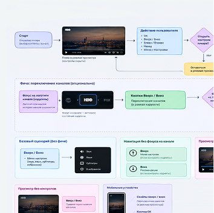
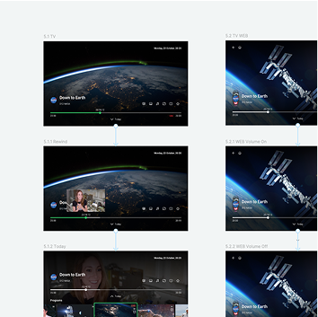
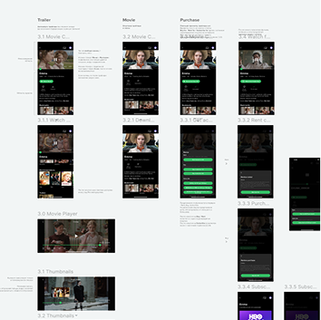
Solution
We introduced an optional feature that lets each client customize how the player responds to the up/down buttons. The static channel logo can become a focusable channel carousel. When focused, the buttons switch between channels; otherwise, the player retains its standard navigation. During playback, when the controls are hidden, pressing up or down switches channels directly.
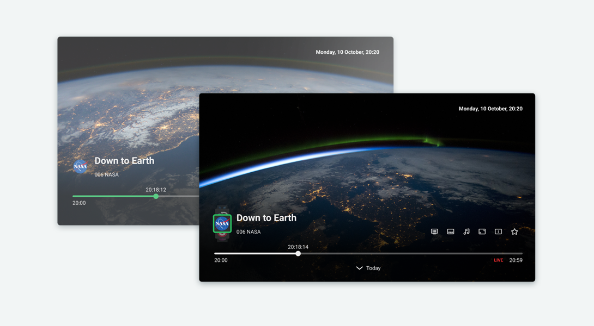
Outcome
We refreshed the player design across all platforms and addressed the local provider’s specific use case, preserving familiar interactions for its viewers while maintaining
a consistent LIME experience for all other clients.
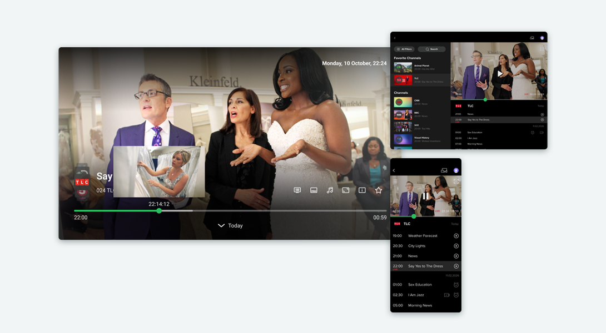
Streamlining customization
One of the key business improvements was streamlining app customization for new clients. I audited the customizable elements, identified the core components, and created
a reference library for our developers. I also prepared a client-facing guide with examples and specifications for the required assets. This helped simplify and automate the rebranding process, reducing the team’s turnaround time for a new client from 6 weeks
to just 1 week and increasing productivity sixfold.
The LIME project involved many other challenges, from complex user flows to evolving
the product across platforms. The SmartLabs LIME Application is available on the App Store and other app marketplaces.
Smartlabs
Smartlabs develops software solutions and infrastructure for digital TV services and manufactures set-top boxes. As Art Director, I built a cohesive visual identity across the brand — from refreshing its visual identity and website to creating presentations, advertising, social media content, and exhibition stands. Alongside hands-on design work, I coordinated other specialists to ensure a consistent visual language across every brand touchpoint.
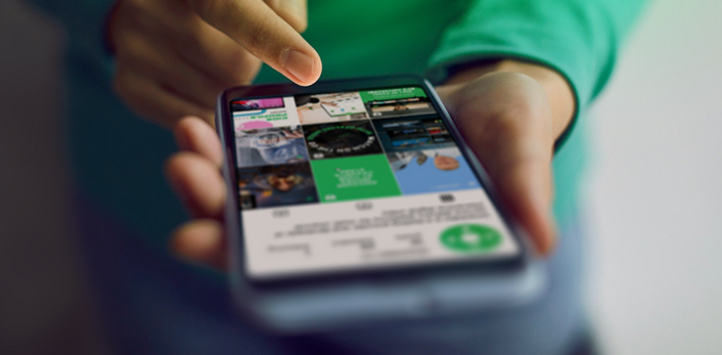
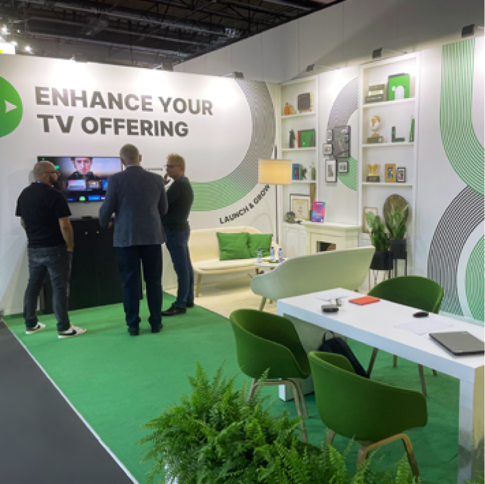
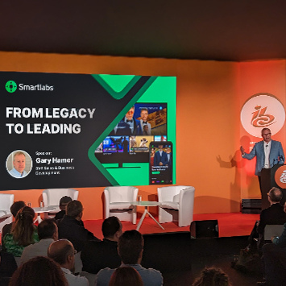
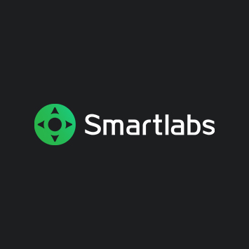
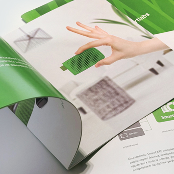
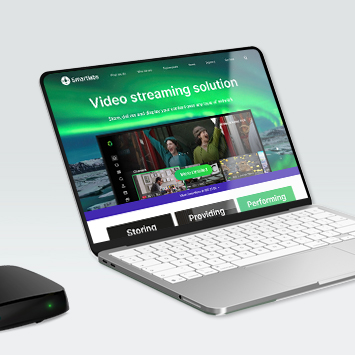
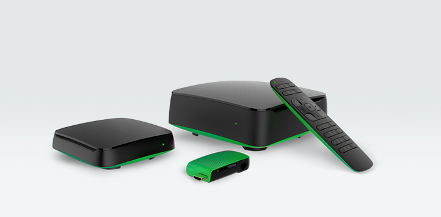
Project challenge
Website
The goal was to redesign the Smartlabs website as the company’s primary showcase for its products and solutions. This meant restructuring the product offering, making it easier for potential clients to understand, and creating a more modern visual presentation.
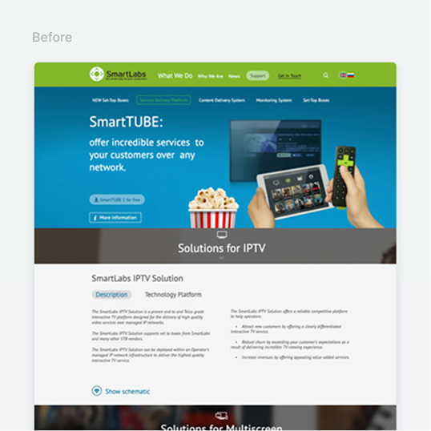
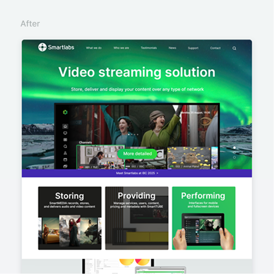
Problem
The previous website listed a large number of products and solutions on the homepage, using complex technical language. The content lacked a clear hierarchy, and the nested menu structure made navigation difficult. For a B2B company, this was a marketing challenge: the website didn’t help sales teams quickly guide potential clients to the information they needed.
Process
First, I restructured the website’s product offering from a marketing perspective, grouping related products and solutions into clear categories, simplifying the navigation, and establishing a new information hierarchy.
I also developed the content for key pages, writing copy that clearly explained each product, the problems it solves, and who it is designed for.
I then translated the new marketing structure into UX and UI, designing the navigation and page hierarchy and refreshing the website’s visual system.
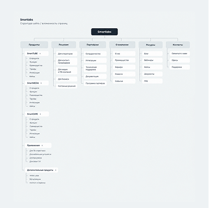
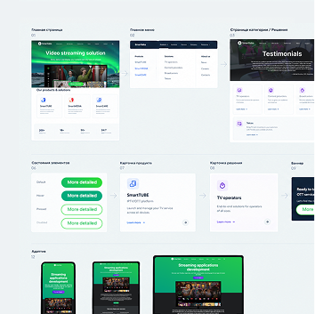
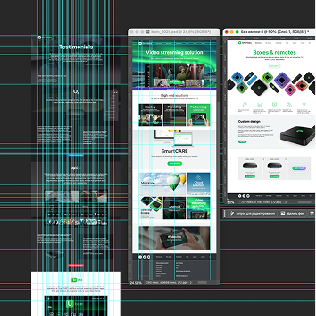
Outcome
Products and solutions were presented as modular visual components, including content blocks, banners, and calls to action. This flexible structure made it easy to rearrange homepage sections and adapt the content to seasonal business priorities. The redesigned website became a more effective sales tool.
Working on Smartlabs allowed me to apply and expand a broad range of design skills. I created illustrations and landing pages, designed print materials, developed advertising concepts, and prepared technical artwork for manufacturing. In my final year, I focused heavily on video content for social media, developing the visual concepts, filming, and editing the videos. Over time, I grew from an in-house graphic designer into a versatile creative professional in tech, with a strong product mindset.
Variteks
Variteks is a Turkish manufacturer and retailer of medical and orthopedic products. For its Russian distributor, I designed the brand’s online store and created supporting marketing materials, including printed catalogs, flyers, business cards, and other collateral.
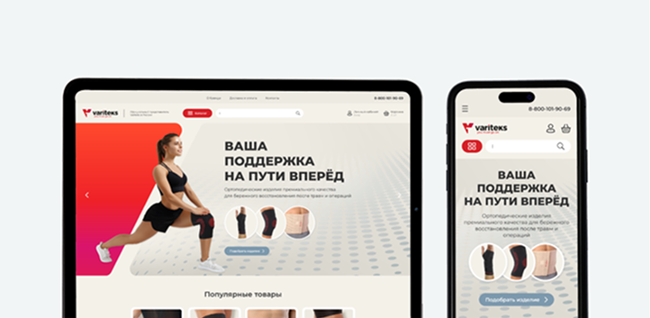
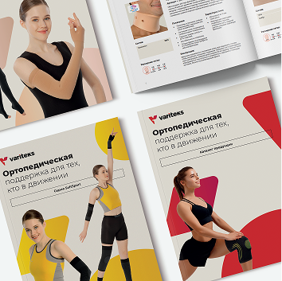
Project challenge
Online store
The goal was to create an easy-to-navigate online catalog where customers could quickly find the right orthopedic product and place an order.
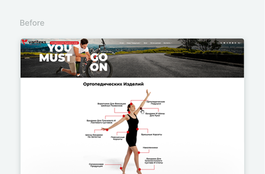
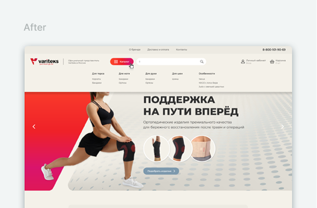
Problem
The existing Turkish website lacked a clear catalog structure. Its filtering system was difficult to use, with products and attributes organized without a consistent logic, making it hard for customers to find the right item.
Process
I restructured the product catalog and redesigned the filtering system around product attributes. I organized related categories and built a filtering logic that allowed users to progressively narrow down or broaden their results. Based on this structure, I designed the core e-commerce user flows and developed a cohesive visual system for the store.
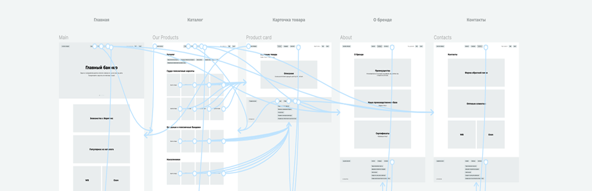
Outcome
The result was a straightforward online store with a clear catalog structure and an intuitive filtering system. I also developed a consistent visual identity to support the brand’s presence in the Russian market.
Organaza
Organaza is a project and task management platform for breaking down tasks, planning work, and visualizing workflows. I was responsible for the product’s UI, developing its visual style and designing the system’s core screens.
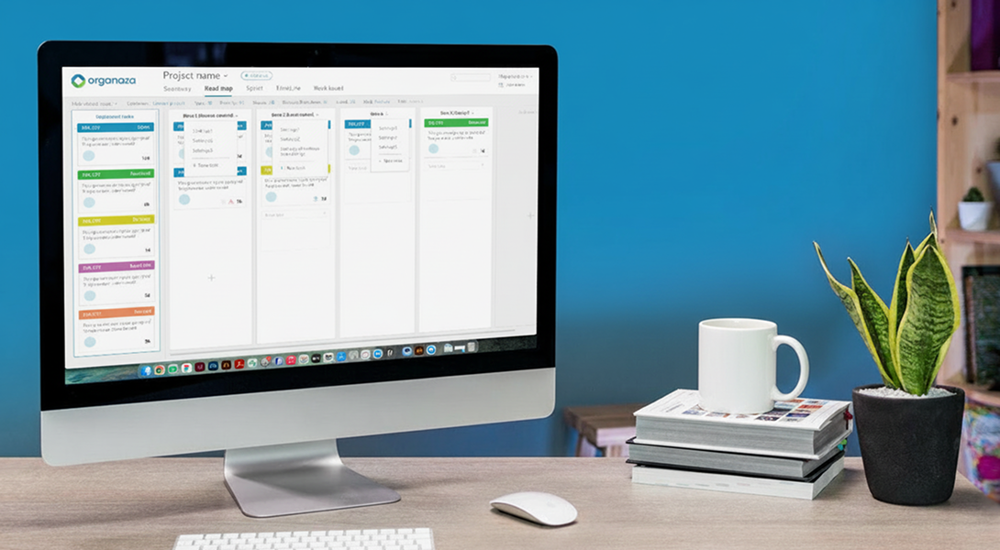
Challenge
The goal was to create a clear and cohesive visual language for a complex productivity tool, making a large amount of information and functionality easy to navigate in everyday work.
Process
I explored comparable products and prototypes to define the product’s visual direction, including interaction principles, color palette, typography, and component styles. Using these foundations, I designed the main screens and interface states.
Outcome
The result was a cohesive interface for a complex project management system. Large amounts of data, tasks, and settings were organized into a consistent visual system without overwhelming the user.